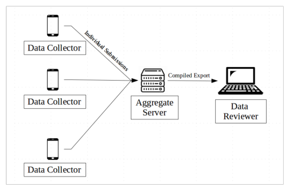
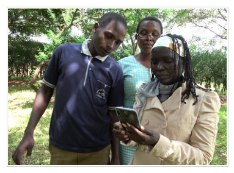

RAIL 2020Traduction automatique
Mobiliser les métadonnées : Open Data Kit (ODK) pour le développement de ressources linguistiques en Afrique de l'Est
Traduction automatique, non relue par un humain. L'article original est la version de référence ; les phrases soulignées sont celles dont les contrôles automatiques n'étaient pas sûrs.
Proceedings of the first workshop on Resources for African Indigenous Languages.
Traduction par Ernst van Gassen (Arktos AI Lab), sous licence CC BY-NC 4.0 comme l'original. Réutilisation permise avec attribution, à usage non commercial uniquement. Les auteurs originaux n'ont pas relu ni approuvé cette traduction.
Texte brut réutilisable, avec sa licence : Français · LICENCE
Affiliations
Richard T. Griscom
Leiden University
Van Wijkplaats 4, 2311 BX Leiden, Netherlands
Adresses e-mail retirées pour la protection de la vie privée. Elles figurent dans le PDF original.
Résumé
Les linguistes de terrain collectent et archivent des métadonnées dans le cadre des ressources linguistiques (RL) qu'ils créent, mais ils travaillent souvent dans des environnements à ressources limitées qui les empêchent d'utiliser des ordinateurs pour la saisie des données. Dans de telles situations, les linguistes doivent accomplir des tâches de numérisation longues et sujettes aux erreurs qui limitent la quantité et la qualité des ressources et des métadonnées qu'ils produisent (Thieberger & Berez 2012; Margetts & Margetts 2012). Cet article décrit une méthode d'entrée de métadonnées linguistiques dans les appareils mobiles à l'aide de la plate-forme Open Data Kit (ODK), une suite d'outils open source conçus pour la collecte de données mobiles. La méthode a été intégrée dans deux projets de documentation linguistique communautaire en Tanzanie, impliquant douze chercheurs collectant simultanément des données dans quatre régions administratives (Griscom & Harvey 2019). Grâce à l'identification des dépendances et des redondances de données propres au projet, un certain nombre d'efficacités ont été intégrées au système de saisie des métadonnées. Celles-ci incluent l'utilisation de vocabulaires fermés, des formulaires de saisie de données uniques pour les différentes catégories de collecteurs de données, et des formulaires séparés pour la saisie des métadonnées des participants et des ressources. Le système qui en résulte sert de base au développement continu d'outils bilingues d'entrée de métadonnées anglais-swahili à usage général, qui seront mis à la disposition d'autres chercheurs travaillant en Afrique de l'Est.
Mots-clés
métadonnées, ressources linguistiques, Afrique
1. Introduction
La collecte de données linguistiques pour soutenir la création de ressources linguistiques (RL) pour les langues africaines indigènes implique souvent de travailler avec des communautés dans des zones où l'accès régulier à l'électricité et à Internet peut être limité. Ces restrictions de ressources amènent souvent les collecteurs de données à utiliser des méthodes basées sur le papier qui produisent des données non numériques devant ensuite être numérisées. La numérisation prend du temps et peut introduire des erreurs supplémentaires dans les données, de sorte qu’une méthode qui supprime la numérisation du flux de travail présente des avantages distincts (Thieberger & Berez 2012: 92; Margetts & Margetts 2012: 16). Les méthodes et outils décrits dans cet article permettent aux collecteurs de données, travaillant individuellement ou en équipe, de créer des métadonnées numériques riches dans des régions éloignées sans avoir besoin d'un ordinateur ou d'une connexion Internet au moment de la création des métadonnées.
1.1 Mobilisation des métadonnées de ressources linguistiques
Des métadonnées de haute qualité sont cruciales pour la découverte de ressources (Good 2002), mais aussi pour répondre à des questions de recherche impliquant des informations extra-linguistiques (Kendall 2008; Kendall 2011). Diverses normes de métadonnées existent pour les LR, y compris Text Encoding Initiative (TEI), ISLE Meta Data Initiative (IMDI), et Component MetaData Infrastructure (CMDI), parmi d'autres. Il existe également plusieurs outils de création de métadonnées linguistiques actuellement disponibles, tels que ProFormA2, Arbil, COMEDI, et CMDI-Maker (Fallucchi, Steffen & De Luca 2019). Tous les outils de création de métadonnées actuellement disponibles nécessitent soit un ordinateur, soit une connexion internet stable pour fonctionner correctement.
Le besoin d'un nouveau système de saisie de métadonnées numériques qui ne dépend pas d'un ordinateur ou d'une connexion internet stable est exacerbé lorsque la collecte de données est à grande échelle et menée par plusieurs chercheurs travaillant simultanément dans différentes régions. Ce sont les conditions exactes de deux projets coordonnés et communautaires de documentation linguistique dans le nord de la Tanzanie, financés par le Endangered Languages Documentation Programme (ELDP) : « Gorwaa, Hadza, et Ihanzu : Enquêtes grammaticales dans le Rift tanzanien » (IFP0285) et « Documenting Hadza : contact des langues et variation » (IPF0304). Ensemble, ces projets de deux ans impliquent la participation de 10 chercheurs locaux issus des communautés autochtones Ihanzu et Hadza, répartis dans cinq stations du bassin du lac Eyasi, ainsi que deux chercheurs principaux (PI). La figure 1 montre une carte de la Tanzanie avec l'emplacement de chacune des cinq stations de recherche marqué par un point (Google 2020a).

Figure 1 : Carte des stations de recherche à l’échelle nationale
Avec chacun des 12 chercheurs devant produire de nouvelles métadonnées chaque semaine pendant une période dépassant un an, la collecte et la numérisation des métadonnées sur support papier n'était pas une option raisonnable. La majorité de la collecte de données pour les deux projets a lieu dans des zones sans électricité ni internet, donc les outils numériques classiques de création de métadonnées ne pouvaient pas être utilisés non plus. Une nouvelle méthode de saisie des métadonnées mobiles était nécessaire.
2. Open Data Kit
ODK est une plate-forme logicielle gratuite et open-source pour la collecte et la gestion des données dans des environnements limités en ressources, et il comprend trois applications principales pertinentes pour la collecte de métadonnées linguistiques: ODK Build, une application Web pour la création de formulaires personnalisés pour la saisie de données basée sur la norme XForm, ODK Aggregate, une application serveur Java pour stocker, analyser et exporter des données de formulaire, et ODK Collect, une application Android qui permet la saisie de données directement dans les appareils mobiles. Avec ces trois composants fonctionnant ensemble, les équipes de chercheurs peuvent collecter des données rapidement et simultanément dans des zones éloignées, et toutes leurs données peuvent être compilées ensemble sur un seul serveur. La figure 2 montre un schéma du flux de travail pendant la collecte de données : les collecteurs de données téléchargent leurs données sur un serveur ODK Aggregate depuis leurs appareils mobiles, puis un réviseur de données compile les données et les exporte du serveur pour analyse.

Figure 2 : Schéma du flux de travail de collecte de données ODK
Les critères suivants ont été jugés cruciaux pour un système de saisie de métadonnées réussi : le retrait de la numérisation du flux de travail de création de métadonnées, la scalabilité afin que le système puisse être utilisé par des équipes de collecteurs de données travaillant indépendamment et simultanément, l'utilisation de la technologie mobile pour permettre la création de métadonnées dans des zones sans électricité, et une plateforme logicielle open source qui rend la méthode accessible à la communauté de recherche.
La suite Open Data Kit (ODK) a été choisie comme plate-forme principale pour la collecte de métadonnées car elle répond à tous les critères ci-dessus. Elle présente également des avantages supplémentaires, notamment un historique établi en tant que plateforme de collecte de données parmi les ONG et les organisations à but non lucratif travaillant en Afrique, le support des formulaires de saisie de données multilingues et la collecte de données géospatiales.
3. La méthode de métadonnées linguistiques ODK
Le système de saisie des métadonnées ODK créé pour les projets de documentation linguistique de la communauté Hadza et Ihanzu a été conçu et testé sur une période de quelques mois avant sa mise en œuvre. La méthode a été conçue pour être aussi précise et efficace que possible compte tenu des besoins spécifiques des projets de recherche, et plus tard, les spécificités du système ont servi de base au développement d'outils à usage général.
3.1 Identification des besoins en métadonnées
Une première étape dans le développement d'un nouvel outil ou d'une nouvelle méthode est l'identification des valeurs et des desiderata de la recherche (Good 2010). Pour les projets de documentation linguistique en Tanzanie, nos desiderata étaient des métadonnées qui satisfont les exigences de format et de contenu de l'Endangered Languages Archive (ELAR), le dépôt dans lequel les données du projet seront déposées, et des métadonnées qui permettent l'analyse de la variation linguistique et du contact, un axe de recherche du programme.
Les dépôts d'archives pour les projets ELDP hébergés sur ELAR utilisent un profil de métadonnées qui comprend des composantes pour les métadonnées de dépôt, de bundle, de ressource et de participant (Duin et al. 2019). Au total, trois dépôts ont été préparés pour les deux projets ELDP: un pour Ihanzu et deux pour Hadza. Une méthode était donc nécessaire pour spécifier le dépôt approprié pour chaque bundle. Les bundles dans ELAR sont utilisés pour regrouper différents types de ressources et de participants, nous avions donc également besoin d'une méthode qui faciliterait ce regroupement et catégoriserait correctement les ressources et les participants. Les différents types de ressources comprennent des enregistrements audio et vidéo, ainsi que des données textuelles telles que des transcriptions et des traductions. Les deux catégories de participants comprennent les chercheurs et les locuteurs.
Les métadonnées nécessaires pour étudier la variation et le contact linguistiques incluent les métadonnées des ressources telles que le genre de discours, l'interactivité et le lieu de l'acte de parole, ainsi que les métadonnées des participants telles que l'âge, le genre, le parcours éducatif, le lieu et l'historique des lieux, et le parcours linguistique. Tous les formulaires de saisie de données créés pour les projets Hadza et Ihanzu devraient donc incorporer des champs pour la saisie de ces types de métadonnées, et les informations devraient être traitées de manière à pouvoir être facilement récupérées.
3.2 Création de formulaires de saisie de métadonnées
Une fois les métadonnées souhaitées identifiées, des formulaires de saisie de métadonnées ont été créés à l'aide d'ODK Build. Un certain nombre d'efficacités ont été intégrées au système de saisie des métadonnées grâce à l'identification des dépendances et des redondances de données propres au projet. Ces efficacités comprenaient l'utilisation de vocabulaires fermés, des ensembles uniques de formulaires pour différentes catégories de collecteurs de données, et la division des formulaires de ressources et de participants.
3.2.1 Vocabulaires fermés et ensembles de formulaires
Bien que de nombreux composants du profil de métadonnées ELAR ne soient pas restreints à un ensemble fermé de valeurs possibles, dans le cadre d'un projet de recherche, la valeur de nombreux composants est soit constante (par exemple, langue cible, projet), soit restreinte à un ensemble fermé (par exemple, chercheur, équipement utilisé). Un système de création de métadonnées adapté à un projet spécifique peut donc intégrer ces constantes et ces vocabulaires fermés pour augmenter la vitesse et la précision. Plutôt que de créer un formulaire de saisie de métadonnées unique pour tous les collecteurs de données, qui comprendrait des ensembles de vocabulaire fermés avec des entrées qui n’étaient pas pertinentes pour certains collecteurs de données, nous avons créé trois ensembles de formulaires : un ensemble chacun pour les chercheurs principaux, les chercheurs locaux Hadza et les chercheurs locaux Ihanzu.
En créant trois ensembles distincts de formulaires de saisie de métadonnées, nous avons pu restreindre les ensembles fermés uniquement aux valeurs qui étaient des options viables pour chaque catégorie de collecteur de données. Cela a réduit la probabilité d'erreurs de saisie de données catégorielles et a rendu les formulaires plus faciles à naviguer avec moins d'options à choisir.
3.2.2 Métadonnées de session et de locuteur
Les locuteurs participent souvent à la création de plusieurs enregistrements, mais les métadonnées des participants ne sont collectées qu'une seule fois. Pour cette raison, deux formulaires distincts ont été créés pour les métadonnées sur les ressources et les métadonnées sur les participants. Cela a réduit la redondance des données lors de la phase de collecte des données, mais a également introduit la nécessité d'un traitement des données post-collection (voir Section 3.4).
3.2.3 Types de champs et organisation
Une variété de différents widgets d'entrée ont été intégrés dans les formulaires ODK, en fonction du type de métadonnées à collecter. Les widgets de texte ouvert ont été utilisés pour les métadonnées qui ne se limitent pas aux vocabulaires fermés, tels que les noms des participants et les emplacements. Des widgets à choix unique ont été utilisés pour les catégories de métadonnées qui constituent des ensembles fermés de valeurs mutuellement exclusives, comme le sexe d'un participant ou le nom du chercheur qui recueille les données. Des widgets de choix multiples ont été utilisés pour les catégories de métadonnées constituées d'ensembles fermés de valeurs non mutuellement exclusives, comme les langues parlées par un participant. Des widgets de date ont été utilisés pour les métadonnées telles que la date d'enregistrement et l'année de naissance du participant, un widget GPS a été utilisé pour récupérer les données géo-spatiales de l'emplacement de l'enregistrement, et un widget photo a été utilisé pour créer des photos des participants à des fins d'identification.

Figure 3 : Un formulaire pour saisir les métadonnées d'une session d'enregistrement
La figure 3 montre une capture d'écran d'un des formulaires ODK utilisés par les chercheurs locaux. Le widget "Tarehe ya Rekodi" est un widget de date utilisé pour choisir la date d'un enregistrement, les widgets "Jina la Rekodi" et "Jina la Faili" sont des widgets de texte ouvert pour saisir les noms des enregistrements et des fichiers, et le widget "Wilaya Palipoganyika Rekodi" est un widget à choix unique pour choisir le district où un enregistrement a été réalisé. L'astérisque rouge par le nom de chaque widget indique qu'il est nécessaire, et les utilisateurs doivent remplir ces widgets avant de continuer avec le reste du formulaire.
3.3 Mise en place du système ODK
L'installation des composants de l'appareil mobile et du serveur du système ODK était simple et ne nécessitait pas d'expertise technique importante. Un serveur ODK Aggregate a été préparé en suivant les instructions étape par étape sur le site web d'ODK (ODK 2017). FreeDNS a été utilisé pour héberger le serveur gratuitement, et Google Cloud Platform a été utilisé pour créer un serveur virtuel (Google 2020b). En raison du faible volume de données, un petit serveur virtuel et un petit disque ont été jugés suffisants (machine virtuelle g1-small et disque persistant standard de 30 Go).
ODK Collect a été installé sur cinq téléphones mobiles Android, achetés localement en Tanzanie. Chaque téléphone a reçu un nom d'utilisateur unique qui identifie l'équipe utilisant l'appareil pour collecter les métadonnées. Les informations d'accès pour le serveur ODK Aggregate ont été stockées dans les paramètres de chaque téléphone et l'ensemble approprié de formulaires de saisie de métadonnées pour chaque téléphone a été téléchargé. Un mot de passe administrateur a été mis en place sur chaque téléphone afin que certaines options, comme la suppression et le téléchargement de nouveaux formulaires, ne soient pas accessibles aux chercheurs locaux.
ODK est préinstallé avec un support pour plusieurs langues d'interface. Pour les chercheurs locaux en Tanzanie, nous avons défini l'interface pour qu'elle s'affiche en swahili, la lingua franca de l'Afrique de l'Est. Nous avons également conçu les formulaires pour qu'ils soient visibles en anglais ou en swahili, et défini le langage par défaut des formulaires en swahili pour les appareils des chercheurs locaux.

Figure 4 : Des chercheurs locaux s'exercent à utiliser ODK (Crédit photo : Nadia Jassim)
Lors d'un atelier de formation de cinq jours sur la documentation linguistique, tous les chercheurs locaux ont reçu des instructions sur l'utilisation d'ODK pour la création de métadonnées. Les chercheurs locaux se sont entraînés à saisir des données, à enregistrer des formulaires et à les télécharger sur le serveur Aggregate. Au cours de l'entraînement lui-même, certaines modifications mineures ont été apportées aux formulaires, y compris le réordonnancement et la reformulation des questions, sur la base des retours des chercheurs locaux. Après l'entraînement, et une fois la collecte de données lancée, quelques modifications supplémentaires ont été apportées aux formulaires. Par exemple, une question supplémentaire a été ajoutée aux formulaires de métadonnées de la session d'enregistrement pour que les chercheurs locaux et les PIs puissent créer un nom de fichier unique pour chaque enregistrement, qui inclut la date de l'enregistrement au format ISO (AAAAMMJJ), un code de deux lettres pour le chercheur qui a créé l'enregistrement, et un système alphabétique pour organiser les enregistrements en fonction de l'ordre dans lequel ils ont été créés. Ces noms de fichiers sont utilisés pour tous les fichiers de ressources associés à un enregistrement donné. Après que les chercheurs locaux aient éprouvé des difficultés répétées avec la gestion des données, il a été déterminé que l'ajout de la question sur le nom du fichier leur permettrait de regrouper plus facilement les fichiers de ressources après la collecte des données. Les visites de suivi aux stations de recherche ont permis de fournir une rétroaction continue sur la collecte des métadonnées. Les problèmes communs comprenaient des incohérences dans l'orthographe des noms des participants et des malentendus sur les descriptions méta-linguistiques telles que l'interactivité et le genre de la parole. L'erreur la plus fréquente au début était simplement d'oublier de saisir les métadonnées, soit pour une ressource, soit pour un participant.
3.4 Traitement des métadonnées
Grâce à la méthode décrite ici, les métadonnées sont entrées dans les appareils mobiles, puis téléchargées sur un serveur ODK Aggregate. Les données de ce serveur peuvent ensuite être exportées sous forme de fichier à valeurs séparées par des virgules (.CSV), ou diffusées en direct vers Google Sheets. Toutes les soumissions pour chaque formulaire peuvent être exportées ensemble. Afin de produire des fichiers de métadonnées dans le format approprié pour l'archivage avec ELAR, les données des fichiers CSV pour les formulaires de métadonnées des participants et des ressources doivent être liées entre elles. Un script Python a été créé pour produire les fichiers de métadonnées finales pour chaque lot à déposer dans ELAR. Un bundle est un groupe de ressources et de participants associés. Le script compile les informations des métadonnées des ressources et des participants et identifie les types de fichiers de ressources associés à chaque session d'enregistrement pour créer un ensemble qui peut être déposé dans ELAR. Par exemple, si une entrée donnée dans les métadonnées de la ressource spécifie que deux participants locuteurs étaient impliqués dans la création de l'enregistrement, alors le script utilise les noms des participants dans les métadonnées de la ressource pour extraire des métadonnées supplémentaires pour ces deux participants locuteurs de leurs entrées correspondantes dans les métadonnées des participants, et le script crée ensuite un fichier de métadonnées regroupées en utilisant les informations extraites.
4. Évaluation de la méthode
Les objectifs concurrents d'atteindre un volume de données représentatives et l'accessibilité des données, collectivement décrits par certains comme la «crise de reproductibilité» (Gezelter 2015), peuvent être abordés dans le domaine du travail linguistique sur le terrain d'au moins deux façons: la participation active de la communauté de la parole dans la collecte de données («crowd-sourcing») et l'utilisation stratégique des technologies informatiques («automatisation»). La méthode des métadonnées linguistiques ODK tente d'utiliser les deux solutions et présente un certain nombre d'avantages notables par rapport aux méthodes d'entrée non numériques. La méthode a le potentiel d'augmenter la qualité, la quantité et la cohérence des données linguistiques et des métadonnées déposées dans les archives linguistiques. Elle le fait non seulement en réduisant les goulots d'étranglement de traitement, ce qui permet aux linguistes de passer plus de temps à analyser ou à collecter des données lorsqu'ils seraient autrement en train de numériser manuellement les données, mais aussi en ouvrant la porte à une implication accrue des communautés de locuteurs dans le processus de documentation linguistique, ce qui a été démontré comme bénéfique pour les résultats de la recherche en produisant des ensembles de données linguistiques plus diversifiés et représentatifs (Czaykowska-Higgins 2009). Le système n'est pas sans ses limites, cependant. Comme pour tout système de saisie de métadonnées, les champs de texte libre contiendront encore des erreurs qui doivent être vérifiées soit manuellement, soit par un système automatisé de quelque sorte. Un entraînement supplémentaire et des retours d'information peuvent réduire le taux d'erreur, mais il n'est pas raisonnable de s'attendre à des métadonnées exemptes d'erreurs avec un système qui utilise des champs de texte libres. Les soumissions pour les versions mises à jour des formulaires doivent être compilées manuellement avec les soumissions pour les versions précédentes, au moins dans la version actuelle du logiciel ODK Aggregate. L'importance de cette tâche dépend du volume et du moment des mises à jour apportées aux formulaires. Si les formulaires sont soumis via ODK Collect en utilisant une version précédente qui a depuis été supprimée de l'appareil, alors ces formulaires ne peuvent plus être consultés localement sur l'appareil. Encore une fois, l'importance de cette limitation dépend du volume et du moment des mises à jour. Peut-être la plus grande limitation, cependant, est que la sortie de la suite ODK doit être formatée selon le profil de métadonnées de l'archive linguistique correspondante. Cela nécessite un certain codage et limite donc le bassin de chercheurs capables de concevoir une mise en œuvre spécifique au projet à ceux qui ont des connaissances en codage ou l'accès à quelqu'un ayant ces connaissances.
5. Vers un système standardisé
Une manière de réduire la courbe d'apprentissage du système de métadonnées ODK est de développer un ensemble de formulaires à usage général standardisés, basés sur un ou plusieurs profils de métadonnées courants, ainsi qu'un script de traitement accompagnant. Les projets de documentation linguistique de la communauté Hadza et Ihanzu en Tanzanie servent maintenant de base à la création d’un tel ensemble d’outils. Dans un premier temps, ces outils seront basés sur le profil de métadonnées ELAR et limités à des interfaces en anglais et en swahili, ce qui devrait être utile aux chercheurs travaillant avec des communautés de langues en voie de disparition en Afrique de l'Est. À l'avenir, il est prévu d'étendre les outils pour inclure une interface en français et des profils de métadonnées pour d'autres archives linguistiques et dépôts de données courants.
6. Conclusion
Le système de métadonnées linguistiques ODK mis à l'essai offre un certain nombre d'avantages par rapport aux méthodes de saisie manuelle des données. La suppression de la numérisation et l'utilisation de vocabulaires fermés augmentent la précision et la rapidité de la saisie des métadonnées. Cela est significatif car cela permet la création de grands ensembles de données représentatifs, qui sont un objectif principal de la documentation linguistique (Himmelmann 1998; Himmelmann 2006; Woodbury 2003). La scalabilité du système ODK permet également aux équipes de collecteurs de données de travailler ensemble, ce qui peut favoriser une plus grande implication de la communauté et la collaboration.
Le système spécialement développé pour les projets de documentation linguistique de la communauté Hadza et Ihanzu s'appuie sur des vocabulaires fermés et des valeurs constantes spécifiques au projet et au dépôt, mais ces spécificités éclairent la conception d'outils de saisie de métadonnées à usage général. On espère que ces outils rendront la possibilité de création de métadonnées numériques une réalité pour les chercheurs travaillant dans les régions reculées de l'Afrique.
Remerciements
La recherche rapportée dans cet article est soutenue par le Endangered Languages Documentation Programme (ELDP, IPF0304) et le Leiden University Centre for Digital Humanities (LUCDH).
7. Références bibliographiques
Czaykowska-Higgins, Ewa. 2009. Research Models, Community Engagement, and Linguistic Fieldwork: Reflections on Working within Canadian Indigenous Communities. Language Documentation and Conservation 3(1). 15-50.
Duin, Patrick, Twan Goosen, Mitchell Seaton, Olha Shkaravska, George Georgovassilis & Jean-Charles Ferrieres. 2019. CMDI Component Registry. CLARIN. https://catalog.clarin.eu/ds/ComponentRegistry/#/.
Fallucchi, Francesca, Hennicke Steffen & Ernesto William De Luca. 2019. Creating CMDI-Profiles for Textbook Resources. In Emmanouel Garoufallou, Fabio Sartori, Rania Siatri & Marios Zervas (eds.), Metadata and Semantic Research, vol. 846,302-314. Cham: Springer International Publishing. doi:10.1007/978-3-030-14401-2_28. http://link.springer.com/10.1007/978-3-030-14401-2_28 (13 February, 2020).
Gezelter, Daniel J. 2015. Open Source and Open Data Should Be Standard Practices. The journal of physical chemistry letters 6(7). 1168-1169.
Good, Jeff. 2002. A Gentle Introduction to Metadata. http://www.language-archives.org/documents/gentle-intro.html.
Good, Jeff. 2010. Valuing technology: Finding the linguist's place in a new technological universe. Language Documentation, Practice and values. Amsterdam: John Benjamins.
Google. 2020. Google Cloud Platform. https://cloud.google.com.
Griscom, Richard T. & Andrew Harvey. 2019. Gorwaa, Hadza, and Ihanzu: Language contact, variation, and grammatical inquiries in the Tanzanian Rift. Presented at the East Africa Day Leiden, Leiden. https://doi.org/10.5281/zenodo.3509475.
Himmelmann, Nikolaus P. 1998. Documentary and descriptive linguistics. Linguistics 36. 161-195.
Himmelmann, Nikolaus P. 2006. Language documentation: What is it and what is it good for? In Jost Gippert, Nikolaus P. Himmelmann & Ulrike Mosel (eds.), Essentials of Language Documentation. Berlin: Mouton de Gruyter.
Kendall, Tyler. 2008. On the History and Future of Sociolinguistic Data. Language and Linguistics Compass 2(2). 332-351. doi:10.1111/j.1749-818X.2008.00051.x.
Kendall, Tyler. 2011. Corpora from a sociolinguistic perspective. Revista Brasileira de Linguística Aplicada 11(2). 361-389. doi:10.1590/S1984-63982011000200005.
Margetts, Anna & Andrew Margetts. 2012. Audio and video recording techniques for linguistic research. The Oxford Handbook of Linguistic Fieldwork. Oxford University Press.
ODK. 2017. Getting Started With ODK. https://docs.opendatakit.org/getting-started/#install-aggregate-optional.
Thieberger, Nicholas & Andrea L. Berez. 2012. Linguistic Data Management. The Oxford Handbook of Linguistic Fieldwork. Oxford University Press.
Woodbury, Anthony C. 2003. Defining Documentary Linguistics. Language Documentation and Description, vol. 1. London: Hans Rausing Endangered Languages Project.
English et Français
Mobilizing Metadata: Open Data Kit (ODK) for Language Resource Development in East Africa
Mobiliser les métadonnées : Open Data Kit (ODK) pour le développement de ressources linguistiques en Afrique de l'Est
Affiliations
Richard T. Griscom
Leiden University
Van Wijkplaats 4, 2311 BX Leiden, Netherlands
Affiliations
Richard T. Griscom
Leiden University
Van Wijkplaats 4, 2311 BX Leiden, Netherlands
Abstract
Résumé
Linguistic fieldworkers collect and archive metadata as part of the language resources (LRs) that they create, but they often work in resource-constrained environments that prevent them from using computers for data entry. In such situations, linguists must complete time-consuming and error-prone digitization tasks that limit the quantity and quality of the resources and metadata that they produce (Thieberger & Berez 2012; Margetts & Margetts 2012). This paper describes a method for entering linguistic metadata into mobile devices using the Open Data Kit (ODK) platform, a suite of open source tools designed for mobile data collection. The method was incorporated into two community-based language documentation projects in Tanzania, involving twelve researchers simultaneously collecting data in four administrative regions (Griscom & Harvey 2019). Through the identification of project-specific data dependencies and redundancies, a number of efficiencies were built into the metadata entry system. These include the use of closed vocabularies, unique data entry forms for distinct data collector categories, and separate forms for entering participant and resource metadata. The resulting system serves as the basis for the ongoing development of general purpose bilingual English-Swahili metadata entry tools, to be made available for use by other researchers working in East Africa.
Les linguistes de terrain collectent et archivent des métadonnées dans le cadre des ressources linguistiques (RL) qu'ils créent, mais ils travaillent souvent dans des environnements à ressources limitées qui les empêchent d'utiliser des ordinateurs pour la saisie des données. Dans de telles situations, les linguistes doivent accomplir des tâches de numérisation longues et sujettes aux erreurs qui limitent la quantité et la qualité des ressources et des métadonnées qu'ils produisent (Thieberger & Berez 2012; Margetts & Margetts 2012). Cet article décrit une méthode d'entrée de métadonnées linguistiques dans les appareils mobiles à l'aide de la plate-forme Open Data Kit (ODK), une suite d'outils open source conçus pour la collecte de données mobiles. La méthode a été intégrée dans deux projets de documentation linguistique communautaire en Tanzanie, impliquant douze chercheurs collectant simultanément des données dans quatre régions administratives (Griscom & Harvey 2019). Grâce à l'identification des dépendances et des redondances de données propres au projet, un certain nombre d'efficacités ont été intégrées au système de saisie des métadonnées. Celles-ci incluent l'utilisation de vocabulaires fermés, des formulaires de saisie de données uniques pour les différentes catégories de collecteurs de données, et des formulaires séparés pour la saisie des métadonnées des participants et des ressources. Le système qui en résulte sert de base au développement continu d'outils bilingues d'entrée de métadonnées anglais-swahili à usage général, qui seront mis à la disposition d'autres chercheurs travaillant en Afrique de l'Est.
Keywords
Mots-clés
metadata, language resources, Africa
métadonnées, ressources linguistiques, Afrique
1. Introduction
1. Introduction
Collecting linguistic data to support the creation of LRs for indigenous African languages often involves working with communities in areas where regular access to electricity and internet may be limited. These resource restrictions often lead data collectors to utilize paper-based methods that produce non-digital data which must then later be digitized. Digitization is time-consuming and can introduce additional errors to data, so a method that removes digitization from the workflow has distinct advantages (Thieberger & Berez 2012: 92; Margetts & Margetts 2012: 16). The methods and tools described in this paper enable data collectors, working individually or in teams, to create rich digital metadata in remote regions without the need for a computer or internet connection at the time of metadata creation.
La collecte de données linguistiques pour soutenir la création de ressources linguistiques (RL) pour les langues africaines indigènes implique souvent de travailler avec des communautés dans des zones où l'accès régulier à l'électricité et à Internet peut être limité. Ces restrictions de ressources amènent souvent les collecteurs de données à utiliser des méthodes basées sur le papier qui produisent des données non numériques devant ensuite être numérisées. La numérisation prend du temps et peut introduire des erreurs supplémentaires dans les données, de sorte qu’une méthode qui supprime la numérisation du flux de travail présente des avantages distincts (Thieberger & Berez 2012: 92; Margetts & Margetts 2012: 16). Les méthodes et outils décrits dans cet article permettent aux collecteurs de données, travaillant individuellement ou en équipe, de créer des métadonnées numériques riches dans des régions éloignées sans avoir besoin d'un ordinateur ou d'une connexion Internet au moment de la création des métadonnées.
1.1 Mobilizing Language Resource Metadata
1.1 Mobilisation des métadonnées de ressources linguistiques
High quality metadata are crucial for resource discovery (Good 2002), but also for answering research questions that involve extra-linguistic information (Kendall 2008; Kendall 2011). Various metadata standards exist for LRs, including Text Encoding Initiative (TEI), ISLE Meta Data Initiative (IMDI), and Component MetaData Infrastructure (CMDI), among others. There are also multiple linguistic metadata creation tools currently available, such as ProFormA2, Arbil, COMEDI, and CMDI-Maker (Fallucchi, Steffen & De Luca 2019). All metadata creation tools currently available require either a computer or a stable internet connection to function properly.
Des métadonnées de haute qualité sont cruciales pour la découverte de ressources (Good 2002), mais aussi pour répondre à des questions de recherche impliquant des informations extra-linguistiques (Kendall 2008; Kendall 2011). Diverses normes de métadonnées existent pour les LR, y compris Text Encoding Initiative (TEI), ISLE Meta Data Initiative (IMDI), et Component MetaData Infrastructure (CMDI), parmi d'autres. Il existe également plusieurs outils de création de métadonnées linguistiques actuellement disponibles, tels que ProFormA2, Arbil, COMEDI, et CMDI-Maker (Fallucchi, Steffen & De Luca 2019). Tous les outils de création de métadonnées actuellement disponibles nécessitent soit un ordinateur, soit une connexion internet stable pour fonctionner correctement.
The need for a new digital metadata entry system that does not rely on a computer or stable internet connection is exacerbated when data collection is on a large scale and conducted by multiple researchers working simultaneously in different regions. These are the exact conditions of two coordinated and community-based language documentation projects in northern Tanzania, funded by the Endangered Languages Documentation Programme (ELDP): "Gorwaa, Hadza, and Ihanzu: Grammatical Inquiries in the Tanzanian Rift" (IFP0285) and "Documenting Hadza: language contact and variation" (IPF0304). Together, these two-year projects involve the participation of 10 local researchers from the Ihanzu and Hadza indigenous communities, distributed across five stations in the Lake Eyasi Basin, as well as two principle investigators (PIs). Figure 1 shows a map of Tanzania with the location of each of the five research stations marked by a dot (Google 2020a).
Le besoin d'un nouveau système de saisie de métadonnées numériques qui ne dépend pas d'un ordinateur ou d'une connexion internet stable est exacerbé lorsque la collecte de données est à grande échelle et menée par plusieurs chercheurs travaillant simultanément dans différentes régions. Ce sont les conditions exactes de deux projets coordonnés et communautaires de documentation linguistique dans le nord de la Tanzanie, financés par le Endangered Languages Documentation Programme (ELDP) : « Gorwaa, Hadza, et Ihanzu : Enquêtes grammaticales dans le Rift tanzanien » (IFP0285) et « Documenting Hadza : contact des langues et variation » (IPF0304). Ensemble, ces projets de deux ans impliquent la participation de 10 chercheurs locaux issus des communautés autochtones Ihanzu et Hadza, répartis dans cinq stations du bassin du lac Eyasi, ainsi que deux chercheurs principaux (PI). La figure 1 montre une carte de la Tanzanie avec l'emplacement de chacune des cinq stations de recherche marqué par un point (Google 2020a).
Figure 1: Map of research stations on a national scale
Figure 1 : Carte des stations de recherche à l’échelle nationale
With each of the 12 researchers expected to produce new metadata every week for a period exceeding one calendar year, collecting and digitizing paper-based metadata was not a reasonable option. The majority of data collection for the two projects takes place in areas without electricity or internet, so typical digital metadata creation tools could not be used, either. A new method for mobile metadata entry was needed.
Avec chacun des 12 chercheurs devant produire de nouvelles métadonnées chaque semaine pendant une période dépassant un an, la collecte et la numérisation des métadonnées sur support papier n'était pas une option raisonnable. La majorité de la collecte de données pour les deux projets a lieu dans des zones sans électricité ni internet, donc les outils numériques classiques de création de métadonnées ne pouvaient pas être utilisés non plus. Une nouvelle méthode de saisie des métadonnées mobiles était nécessaire.
2. Open Data Kit
2. Open Data Kit
ODK is a free and open-source software platform for collecting and managing data in resource-constrained environments, and it includes three primary applications of relevance to linguistic metadata collection: ODK Build, a web application for creating custom forms for data entry based on the XForm standard, ODK Aggregate, a Java server application to store, analyze, and export form data, and ODK Collect, an Android application that allows for the entry of data directly into mobile devices. With all three of these components working together, teams of researchers can collect data quickly and simultaneously in remote areas, and all of their data can be compiled together on a single server. Figure 2 shows a schematic of the workflow during data collection: data collectors upload their data to an ODK Aggregate server from their mobile devices, and then a data reviewer compiles the data and exports it from the server for analysis.
ODK est une plate-forme logicielle gratuite et open-source pour la collecte et la gestion des données dans des environnements limités en ressources, et il comprend trois applications principales pertinentes pour la collecte de métadonnées linguistiques: ODK Build, une application Web pour la création de formulaires personnalisés pour la saisie de données basée sur la norme XForm, ODK Aggregate, une application serveur Java pour stocker, analyser et exporter des données de formulaire, et ODK Collect, une application Android qui permet la saisie de données directement dans les appareils mobiles. Avec ces trois composants fonctionnant ensemble, les équipes de chercheurs peuvent collecter des données rapidement et simultanément dans des zones éloignées, et toutes leurs données peuvent être compilées ensemble sur un seul serveur. La figure 2 montre un schéma du flux de travail pendant la collecte de données : les collecteurs de données téléchargent leurs données sur un serveur ODK Aggregate depuis leurs appareils mobiles, puis un réviseur de données compile les données et les exporte du serveur pour analyse.
Figure 2: Schematic of the ODK data collection workflow
Figure 2 : Schéma du flux de travail de collecte de données ODK
The following criteria were considered to be crucial for a successful metadata entry system: the removal of digitization from the metadata creation workflow, scalability so that the system could be used by teams of data collectors working independently and simultaneously, the utilization of mobile technology to enable metadata creation in areas without electricity, and an open source software platform that makes the method accessible to the researcher community.
Les critères suivants ont été jugés cruciaux pour un système de saisie de métadonnées réussi : le retrait de la numérisation du flux de travail de création de métadonnées, la scalabilité afin que le système puisse être utilisé par des équipes de collecteurs de données travaillant indépendamment et simultanément, l'utilisation de la technologie mobile pour permettre la création de métadonnées dans des zones sans électricité, et une plateforme logicielle open source qui rend la méthode accessible à la communauté de recherche.
The Open Data Kit (ODK) suite was selected as the primary platform for metadata collection because it satisfies all of the above criteria. It also has additional advantages, including an established record as a data collection platform among NGOs and non-profits working in Africa, support for multilingual data entry forms, and the collection of geo-spatial data.
La suite Open Data Kit (ODK) a été choisie comme plate-forme principale pour la collecte de métadonnées car elle répond à tous les critères ci-dessus. Elle présente également des avantages supplémentaires, notamment un historique établi en tant que plateforme de collecte de données parmi les ONG et les organisations à but non lucratif travaillant en Afrique, le support des formulaires de saisie de données multilingues et la collecte de données géospatiales.
3. The ODK Linguistic Metadata Method
3. La méthode de métadonnées linguistiques ODK
The ODK metadata entry system created for the Hadza and Ihanzu community language documentation projects was designed and tested over a period of a few months prior to implementation. The method was designed to be as accurate and efficient as possible given the specific needs of the research projects, and later the specifics of the system were used as the basis for the development of general purpose tools.
Le système de saisie des métadonnées ODK créé pour les projets de documentation linguistique de la communauté Hadza et Ihanzu a été conçu et testé sur une période de quelques mois avant sa mise en œuvre. La méthode a été conçue pour être aussi précise et efficace que possible compte tenu des besoins spécifiques des projets de recherche, et plus tard, les spécificités du système ont servi de base au développement d'outils à usage général.
3.1 Identifying Metadata Needs
3.1 Identification des besoins en métadonnées
A first step in developing a new tool or method is the identification of research values and desiderata (Good 2010). For the language documentation projects in Tanzania, our desiderata were metadata that satisfy the format and content requirements of the Endangered Languages Archive (ELAR), the repository in which project data will be deposited, and metadata that allow for the analysis of language variation and contact, a focus of the research program.
Une première étape dans le développement d'un nouvel outil ou d'une nouvelle méthode est l'identification des valeurs et des desiderata de la recherche (Good 2010). Pour les projets de documentation linguistique en Tanzanie, nos desiderata étaient des métadonnées qui satisfont les exigences de format et de contenu de l'Endangered Languages Archive (ELAR), le dépôt dans lequel les données du projet seront déposées, et des métadonnées qui permettent l'analyse de la variation linguistique et du contact, un axe de recherche du programme.
The archive deposits for ELDP projects hosted on ELAR use a metadata profile that includes components for deposit, bundle, resource, and participant metadata (Duin et al. 2019). In total, three deposits were prepared for the two ELDP projects: one for Ihanzu and two for Hadza. A method was thus needed for specifying the appropriate deposit for each bundle. Bundles in ELAR are used to group together different types of resources and participants, so we also needed a method that would facilitate this grouping and correctly categorize resources and participants. The different types of resources include audio and video recordings, as well as text data such as transcriptions and translations. The two categories of participants include researchers and speakers.
Les dépôts d'archives pour les projets ELDP hébergés sur ELAR utilisent un profil de métadonnées qui comprend des composantes pour les métadonnées de dépôt, de bundle, de ressource et de participant (Duin et al. 2019). Au total, trois dépôts ont été préparés pour les deux projets ELDP: un pour Ihanzu et deux pour Hadza. Une méthode était donc nécessaire pour spécifier le dépôt approprié pour chaque bundle. Les bundles dans ELAR sont utilisés pour regrouper différents types de ressources et de participants, nous avions donc également besoin d'une méthode qui faciliterait ce regroupement et catégoriserait correctement les ressources et les participants. Les différents types de ressources comprennent des enregistrements audio et vidéo, ainsi que des données textuelles telles que des transcriptions et des traductions. Les deux catégories de participants comprennent les chercheurs et les locuteurs.
The metadata required for studying language variation and contact include resource metadata such as speech genre, interactivity, and location of speech act, as well as participant metadata such as age, gender, education background, location and location history, and language background. Any data entry forms created for the Hadza and Ihanzu projects would therefore need to incorporate fields for entering these types of metadata, and the information would need to be processed in such a way that it can be easily retrieved.
Les métadonnées nécessaires pour étudier la variation et le contact linguistiques incluent les métadonnées des ressources telles que le genre de discours, l'interactivité et le lieu de l'acte de parole, ainsi que les métadonnées des participants telles que l'âge, le genre, le parcours éducatif, le lieu et l'historique des lieux, et le parcours linguistique. Tous les formulaires de saisie de données créés pour les projets Hadza et Ihanzu devraient donc incorporer des champs pour la saisie de ces types de métadonnées, et les informations devraient être traitées de manière à pouvoir être facilement récupérées.
3.2 Creation of Metadata Entry Forms
3.2 Création de formulaires de saisie de métadonnées
Once the desired metadata had been identified, metadata entry forms were created using ODK Build. A number of efficiencies were built into the metadata entry system through the identification of project-specific data dependencies and redundancies. These efficiencies included the use of closed vocabularies, unique sets of forms for different categories of data collectors, and the division of resource and participant forms.
Une fois les métadonnées souhaitées identifiées, des formulaires de saisie de métadonnées ont été créés à l'aide d'ODK Build. Un certain nombre d'efficacités ont été intégrées au système de saisie des métadonnées grâce à l'identification des dépendances et des redondances de données propres au projet. Ces efficacités comprenaient l'utilisation de vocabulaires fermés, des ensembles uniques de formulaires pour différentes catégories de collecteurs de données, et la division des formulaires de ressources et de participants.
3.2.1 Closed Vocabularies and Form Sets
3.2.1 Vocabulaires fermés et ensembles de formulaires
Although many components in the ELAR metadata profile are not restricted to a closed set of possible values, within the context of a research project the value of many components is either constant (e.g. target language, project) or restricted to a closed set (e.g. researcher, equipment used). A metadata creation system tailored to a specific project can therefore incorporate these constants and closed vocabularies to increase speed and accuracy. Rather than create a single metadata entry form for all data collectors, which would include closed vocabulary sets with entries that were not relevant for some data collectors, we created three sets of forms: one set each for principle investigators, Hadza local researchers, and Ihanzu local researchers.
Bien que de nombreux composants du profil de métadonnées ELAR ne soient pas restreints à un ensemble fermé de valeurs possibles, dans le cadre d'un projet de recherche, la valeur de nombreux composants est soit constante (par exemple, langue cible, projet), soit restreinte à un ensemble fermé (par exemple, chercheur, équipement utilisé). Un système de création de métadonnées adapté à un projet spécifique peut donc intégrer ces constantes et ces vocabulaires fermés pour augmenter la vitesse et la précision. Plutôt que de créer un formulaire de saisie de métadonnées unique pour tous les collecteurs de données, qui comprendrait des ensembles de vocabulaire fermés avec des entrées qui n’étaient pas pertinentes pour certains collecteurs de données, nous avons créé trois ensembles de formulaires : un ensemble chacun pour les chercheurs principaux, les chercheurs locaux Hadza et les chercheurs locaux Ihanzu.
By creating three separate sets of metadata entry forms, we were able to restrict closed sets to only the values that were viable options for each category of data collector. This reduced the likelihood of categorical data entry errors and made the forms easier to navigate with fewer options to choose from.
En créant trois ensembles distincts de formulaires de saisie de métadonnées, nous avons pu restreindre les ensembles fermés uniquement aux valeurs qui étaient des options viables pour chaque catégorie de collecteur de données. Cela a réduit la probabilité d'erreurs de saisie de données catégorielles et a rendu les formulaires plus faciles à naviguer avec moins d'options à choisir.
3.2.2 Session and Speaker Metadata
3.2.2 Métadonnées de session et de locuteur
Speakers often participate in the creation of multiple recordings, but participant metadata is only collected once. For this reason, two separate forms were created for resource metadata and participant metadata. This reduced data redundancy during the data collection stage, but also introduced the requirement for post-collection data processing (see Section 3.4).
Les locuteurs participent souvent à la création de plusieurs enregistrements, mais les métadonnées des participants ne sont collectées qu'une seule fois. Pour cette raison, deux formulaires distincts ont été créés pour les métadonnées sur les ressources et les métadonnées sur les participants. Cela a réduit la redondance des données lors de la phase de collecte des données, mais a également introduit la nécessité d'un traitement des données post-collection (voir Section 3.4).
3.2.3 Field types and organization
3.2.3 Types de champs et organisation
A variety of different entry widgets were integrated into the ODK forms, depending on the type of metadata to be collected. Open text widgets were used for metadata that aren not restricted to closed vocabularies, such as the names of participants and locations. Single choice widgets were used for metadata categories that constitute closed sets of mutually exclusive values, such as the gender of a participant or the name of the researcher collecting data. Multiple choice widgets were used for metadata categories consisting of closed sets of non-mutually exclusive values, such as the languages spoken by a participant. Date widgets were used for metadata such as recording date and participant birth year, a GPS widget was used to retrieve geo-spatial data for the location of recording, and a photo widget was used for creating photos of participants for identification purposes.
Une variété de différents widgets d'entrée ont été intégrés dans les formulaires ODK, en fonction du type de métadonnées à collecter. Les widgets de texte ouvert ont été utilisés pour les métadonnées qui ne se limitent pas aux vocabulaires fermés, tels que les noms des participants et les emplacements. Des widgets à choix unique ont été utilisés pour les catégories de métadonnées qui constituent des ensembles fermés de valeurs mutuellement exclusives, comme le sexe d'un participant ou le nom du chercheur qui recueille les données. Des widgets de choix multiples ont été utilisés pour les catégories de métadonnées constituées d'ensembles fermés de valeurs non mutuellement exclusives, comme les langues parlées par un participant. Des widgets de date ont été utilisés pour les métadonnées telles que la date d'enregistrement et l'année de naissance du participant, un widget GPS a été utilisé pour récupérer les données géo-spatiales de l'emplacement de l'enregistrement, et un widget photo a été utilisé pour créer des photos des participants à des fins d'identification.
Figure 3: A form for entering recording session metadata
Figure 3 : Un formulaire pour saisir les métadonnées d'une session d'enregistrement
Figure 3 shows a screenshot one of the ODK forms used by local researchers. The "Tarehe ya Rekodi" widget is a date widget used to choose the date of a recording, the "Jina la Rekodi" and "Jina la Faili" widgets are open text widgets for entering the names recordings and files, and the "Wilaya Palipoganyika Rekodi" widget is a single choice widget for choosing the district where a recording was made. The red asterisk by the name of each widget indicates that it is required, and users need to complete these widgets before continuing with the rest of the form.
La figure 3 montre une capture d'écran d'un des formulaires ODK utilisés par les chercheurs locaux. Le widget "Tarehe ya Rekodi" est un widget de date utilisé pour choisir la date d'un enregistrement, les widgets "Jina la Rekodi" et "Jina la Faili" sont des widgets de texte ouvert pour saisir les noms des enregistrements et des fichiers, et le widget "Wilaya Palipoganyika Rekodi" est un widget à choix unique pour choisir le district où un enregistrement a été réalisé. L'astérisque rouge par le nom de chaque widget indique qu'il est nécessaire, et les utilisateurs doivent remplir ces widgets avant de continuer avec le reste du formulaire.
3.3 Setting up the ODK System
3.3 Mise en place du système ODK
Installation of the mobile device and server components of the ODK system was straightforward and did not require significant technical expertise. An ODK Aggregate server was prepared following the step-by-step directions on the ODK website (ODK 2017) FreeDNS was used to host the server free of cost, and Google Cloud Platform was used to create a virtual server (Google 2020b). Due to the low volume of data, a small virtual server and drive were deemed sufficient (g1-small virtual machine and 30 GB standard persistent disk).
L'installation des composants de l'appareil mobile et du serveur du système ODK était simple et ne nécessitait pas d'expertise technique importante. Un serveur ODK Aggregate a été préparé en suivant les instructions étape par étape sur le site web d'ODK (ODK 2017). FreeDNS a été utilisé pour héberger le serveur gratuitement, et Google Cloud Platform a été utilisé pour créer un serveur virtuel (Google 2020b). En raison du faible volume de données, un petit serveur virtuel et un petit disque ont été jugés suffisants (machine virtuelle g1-small et disque persistant standard de 30 Go).
ODK Collect was installed on five Android mobile phones, purchased locally in Tanzania. Each phone was given a unique username that identifies the team using the device to collect metadata. Access information for the ODK Aggregate server was stored in each phone's settings and the appropriate set of metadata entry forms for each phone was downloaded. An administrator password was put in place on each phone so that some options, such as deleting and downloading new forms, were made unavailable to local researchers.
ODK Collect a été installé sur cinq téléphones mobiles Android, achetés localement en Tanzanie. Chaque téléphone a reçu un nom d'utilisateur unique qui identifie l'équipe utilisant l'appareil pour collecter les métadonnées. Les informations d'accès pour le serveur ODK Aggregate ont été stockées dans les paramètres de chaque téléphone et l'ensemble approprié de formulaires de saisie de métadonnées pour chaque téléphone a été téléchargé. Un mot de passe administrateur a été mis en place sur chaque téléphone afin que certaines options, comme la suppression et le téléchargement de nouveaux formulaires, ne soient pas accessibles aux chercheurs locaux.
ODK comes pre-installed with support for multiple interface languages. For the local researchers in Tanzania we set the interface to be displayed in Swahili, the lingua franca of East Africa. We additionally designed the forms to be visible in either English or Swahili, and set the default language of the forms as Swahili for the local researcher devices.
ODK est préinstallé avec un support pour plusieurs langues d'interface. Pour les chercheurs locaux en Tanzanie, nous avons défini l'interface pour qu'elle s'affiche en swahili, la lingua franca de l'Afrique de l'Est. Nous avons également conçu les formulaires pour qu'ils soient visibles en anglais ou en swahili, et défini le langage par défaut des formulaires en swahili pour les appareils des chercheurs locaux.
Figure 4: Local researchers practice using ODK (Photo credit Nadia Jassim)
Figure 4 : Des chercheurs locaux s'exercent à utiliser ODK (Crédit photo : Nadia Jassim)
During a five-day language documentation training workshop, all local researchers were given instruction on the use of ODK for metadata creation. Local researchers practiced entering data, saving forms, and uploading to the Aggregate server. During the training itself, some minor modifications were made to the forms, including the reordering and rewording of questions, based on feedback from the local researchers. After the training, and once data collection had been initiated, a few additional modifications were made to the forms. For example, an additional question was added to the recording session metadata forms for the local researchers and PIs to create a unique filename for each recording, which includes the recording date in ISO format (YYYYMMDD), a two-letter code for the researcher who created the recording, and an alphabetic system for organizing the recordings based on the order in which they were created. These filenames are used for all of the resource files associated with a given recording. After local researchers experienced repeated difficulties with data management, it was determined that adding the filename question would make it easier for them to bundle resource files after data collection. Follow-up visits to research stations provided opportunities to give continued feedback on metadata collection. Common issues included inconsistencies in the spelling of participant names and misunderstandings about meta-linguistic descriptions such as interactivity and speech genre,. The most frequent mistake initially was simply forgetting to enter metadata, either for a resource or a participant.
Lors d'un atelier de formation de cinq jours sur la documentation linguistique, tous les chercheurs locaux ont reçu des instructions sur l'utilisation d'ODK pour la création de métadonnées. Les chercheurs locaux se sont entraînés à saisir des données, à enregistrer des formulaires et à les télécharger sur le serveur Aggregate. Au cours de l'entraînement lui-même, certaines modifications mineures ont été apportées aux formulaires, y compris le réordonnancement et la reformulation des questions, sur la base des retours des chercheurs locaux. Après l'entraînement, et une fois la collecte de données lancée, quelques modifications supplémentaires ont été apportées aux formulaires. Par exemple, une question supplémentaire a été ajoutée aux formulaires de métadonnées de la session d'enregistrement pour que les chercheurs locaux et les PIs puissent créer un nom de fichier unique pour chaque enregistrement, qui inclut la date de l'enregistrement au format ISO (AAAAMMJJ), un code de deux lettres pour le chercheur qui a créé l'enregistrement, et un système alphabétique pour organiser les enregistrements en fonction de l'ordre dans lequel ils ont été créés. Ces noms de fichiers sont utilisés pour tous les fichiers de ressources associés à un enregistrement donné. Après que les chercheurs locaux aient éprouvé des difficultés répétées avec la gestion des données, il a été déterminé que l'ajout de la question sur le nom du fichier leur permettrait de regrouper plus facilement les fichiers de ressources après la collecte des données. Les visites de suivi aux stations de recherche ont permis de fournir une rétroaction continue sur la collecte des métadonnées. Les problèmes communs comprenaient des incohérences dans l'orthographe des noms des participants et des malentendus sur les descriptions méta-linguistiques telles que l'interactivité et le genre de la parole. L'erreur la plus fréquente au début était simplement d'oublier de saisir les métadonnées, soit pour une ressource, soit pour un participant.
3.4 Metadata Processing
3.4 Traitement des métadonnées
Through the method described here, metadata is entered into mobile devices and then uploaded to an ODK Aggregate server. The data from that server can then be exported as a comma-separated value (.CSV) file, or streamed live to Google Sheets. All of the submissions for each form can be exported together. In order to produce metadata files in the appropriate format for archiving with ELAR, data from the CSV files for participant and resource metadata forms need to be linked together. A Python script was created to produce the final metadata files for each bundle to be deposited in ELAR. A bundle is a group of associated resources and participants. The script compiles information from the resource and participant metadata and identifies the types of resource files associated with each recording session to create a bundle that can be deposited in ELAR. For example, if a given entry in the resource metadata specifies that two speaker-participants were involved in the creation of the recording, then the script uses the participant names in the resource metadata to extract additional metadata for those two speaker-participants from their corresponding entries in the participant metadata, and the script then creates a bundled metadata file using the extracted information.
Grâce à la méthode décrite ici, les métadonnées sont entrées dans les appareils mobiles, puis téléchargées sur un serveur ODK Aggregate. Les données de ce serveur peuvent ensuite être exportées sous forme de fichier à valeurs séparées par des virgules (.CSV), ou diffusées en direct vers Google Sheets. Toutes les soumissions pour chaque formulaire peuvent être exportées ensemble. Afin de produire des fichiers de métadonnées dans le format approprié pour l'archivage avec ELAR, les données des fichiers CSV pour les formulaires de métadonnées des participants et des ressources doivent être liées entre elles. Un script Python a été créé pour produire les fichiers de métadonnées finales pour chaque lot à déposer dans ELAR. Un bundle est un groupe de ressources et de participants associés. Le script compile les informations des métadonnées des ressources et des participants et identifie les types de fichiers de ressources associés à chaque session d'enregistrement pour créer un ensemble qui peut être déposé dans ELAR. Par exemple, si une entrée donnée dans les métadonnées de la ressource spécifie que deux participants locuteurs étaient impliqués dans la création de l'enregistrement, alors le script utilise les noms des participants dans les métadonnées de la ressource pour extraire des métadonnées supplémentaires pour ces deux participants locuteurs de leurs entrées correspondantes dans les métadonnées des participants, et le script crée ensuite un fichier de métadonnées regroupées en utilisant les informations extraites.
4. Method Assessment
4. Évaluation de la méthode
The competing goals of achieving representative data volume and data accessibility, collectively described by some as the "reproducibility crisis" (Gezelter 2015), can be addressed within the domain of linguistic fieldwork in at least two ways: the active participation of the speech community in data collection ("crowd-sourcing"), and the strategic use of computational technologies ("automation"). The ODK linguistic metadata method attempts to utilize both solutions, and has a number of notable advantages over non-digital entry methods. The method has the potential to increase the quality, quantity, and consistency of linguistic data and metadata deposited in language archives. It does so not just by reducing processing bottlenecks, which enables linguists to spend more time analyzing or collecting data when they would otherwise be manually digitizing data, but also by opening the door to increased involvement of speech communities in the language documentation process, which has been shown to benefit research outputs by producing linguistic data sets that are more diverse and representative (Czaykowska-Higgins 2009). The system is not without its limitations, however. As with any metadata entry system, open text fields will still contain errors that must be checked either manually or through an automated system of some kind. Additional training and feedback may reduce the error rate, but it is not reasonable to expect error-free metadata with any system that utilizes open text fields. The submissions for updated versions of forms need to be manually compiled together with the submissions for previous versions, at least in the current version of the ODK Aggregate software. The significance of this task depends on the volume and timing of updates made to forms. If forms are submitted through ODK Collect using a previous version that has since been deleted from the device, then those forms can no longer be viewed locally on the device. Again, the significance of this limitation depends on the volume and timing of updates. Perhaps the biggest limitation, however, is that the output of the ODK suite must be formatted according to the metadata profile of the corresponding language archive. This requires some coding and therefore restricts the pool of researchers capable of designing a project-specific implementation to those with coding knowledge or access to someone with that knowledge.
Les objectifs concurrents d'atteindre un volume de données représentatives et l'accessibilité des données, collectivement décrits par certains comme la «crise de reproductibilité» (Gezelter 2015), peuvent être abordés dans le domaine du travail linguistique sur le terrain d'au moins deux façons: la participation active de la communauté de la parole dans la collecte de données («crowd-sourcing») et l'utilisation stratégique des technologies informatiques («automatisation»). La méthode des métadonnées linguistiques ODK tente d'utiliser les deux solutions et présente un certain nombre d'avantages notables par rapport aux méthodes d'entrée non numériques. La méthode a le potentiel d'augmenter la qualité, la quantité et la cohérence des données linguistiques et des métadonnées déposées dans les archives linguistiques. Elle le fait non seulement en réduisant les goulots d'étranglement de traitement, ce qui permet aux linguistes de passer plus de temps à analyser ou à collecter des données lorsqu'ils seraient autrement en train de numériser manuellement les données, mais aussi en ouvrant la porte à une implication accrue des communautés de locuteurs dans le processus de documentation linguistique, ce qui a été démontré comme bénéfique pour les résultats de la recherche en produisant des ensembles de données linguistiques plus diversifiés et représentatifs (Czaykowska-Higgins 2009). Le système n'est pas sans ses limites, cependant. Comme pour tout système de saisie de métadonnées, les champs de texte libre contiendront encore des erreurs qui doivent être vérifiées soit manuellement, soit par un système automatisé de quelque sorte. Un entraînement supplémentaire et des retours d'information peuvent réduire le taux d'erreur, mais il n'est pas raisonnable de s'attendre à des métadonnées exemptes d'erreurs avec un système qui utilise des champs de texte libres. Les soumissions pour les versions mises à jour des formulaires doivent être compilées manuellement avec les soumissions pour les versions précédentes, au moins dans la version actuelle du logiciel ODK Aggregate. L'importance de cette tâche dépend du volume et du moment des mises à jour apportées aux formulaires. Si les formulaires sont soumis via ODK Collect en utilisant une version précédente qui a depuis été supprimée de l'appareil, alors ces formulaires ne peuvent plus être consultés localement sur l'appareil. Encore une fois, l'importance de cette limitation dépend du volume et du moment des mises à jour. Peut-être la plus grande limitation, cependant, est que la sortie de la suite ODK doit être formatée selon le profil de métadonnées de l'archive linguistique correspondante. Cela nécessite un certain codage et limite donc le bassin de chercheurs capables de concevoir une mise en œuvre spécifique au projet à ceux qui ont des connaissances en codage ou l'accès à quelqu'un ayant ces connaissances.
5. Towards a Standardized System
5. Vers un système standardisé
One way to decrease the learning curve for the ODK metadata system is to develop a set of standardized general purpose forms, based on one or more common metadata profiles, and an accompanying processing script. The Hadza and Ihanzu community language documentation projects in Tanzania are now serving as the foundation for the creation of such a set of tools. Initially, these tools will be based on the ELAR metadata profile and restricted to English and Swahili interfaces, which should be useful for researchers working with endangered language communities in East Africa. In the future, it is planned to expand the tools to include a French interface and metadata profiles for other common language archives and data repositories.
Une manière de réduire la courbe d'apprentissage du système de métadonnées ODK est de développer un ensemble de formulaires à usage général standardisés, basés sur un ou plusieurs profils de métadonnées courants, ainsi qu'un script de traitement accompagnant. Les projets de documentation linguistique de la communauté Hadza et Ihanzu en Tanzanie servent maintenant de base à la création d’un tel ensemble d’outils. Dans un premier temps, ces outils seront basés sur le profil de métadonnées ELAR et limités à des interfaces en anglais et en swahili, ce qui devrait être utile aux chercheurs travaillant avec des communautés de langues en voie de disparition en Afrique de l'Est. À l'avenir, il est prévu d'étendre les outils pour inclure une interface en français et des profils de métadonnées pour d'autres archives linguistiques et dépôts de données courants.
6. Conclusion
6. Conclusion
The piloted ODK linguistic metadata system offers a number of advantages when compared to manual data entry methods. The removal of digitization and the use of closed-vocabularies increase the accuracy and speed of metadata entry. This is significant because it allows for the creation of large and representative datasets, which are a primary goal of language documentation (Himmelmann 1998; Himmelmann 2006; Woodbury 2003). The scalability of the ODK system also allows teams of data collectors to work together, which can allow for increased community engagement and collaboration.
Le système de métadonnées linguistiques ODK mis à l'essai offre un certain nombre d'avantages par rapport aux méthodes de saisie manuelle des données. La suppression de la numérisation et l'utilisation de vocabulaires fermés augmentent la précision et la rapidité de la saisie des métadonnées. Cela est significatif car cela permet la création de grands ensembles de données représentatifs, qui sont un objectif principal de la documentation linguistique (Himmelmann 1998; Himmelmann 2006; Woodbury 2003). La scalabilité du système ODK permet également aux équipes de collecteurs de données de travailler ensemble, ce qui peut favoriser une plus grande implication de la communauté et la collaboration.
The system specifically developed for the Hadza and Ihanzu community language documentation projects relies on project-specific and repository-specific closed vocabularies and constant values, but these specificities inform the design of general purpose metadata entry tools. It is hoped that these tools will make the possibility of digital metadata creation a reality for researchers working throughout remote regions of Africa.
Le système spécialement développé pour les projets de documentation linguistique de la communauté Hadza et Ihanzu s'appuie sur des vocabulaires fermés et des valeurs constantes spécifiques au projet et au dépôt, mais ces spécificités éclairent la conception d'outils de saisie de métadonnées à usage général. On espère que ces outils rendront la possibilité de création de métadonnées numériques une réalité pour les chercheurs travaillant dans les régions reculées de l'Afrique.
Acknowledgements
Remerciements
The research reported in this paper is supported by the Endangered Languages Documentation Programme (ELDP, IPF0304) and the Leiden University Centre for Digital Humanities (LUCDH).
La recherche rapportée dans cet article est soutenue par le Endangered Languages Documentation Programme (ELDP, IPF0304) et le Leiden University Centre for Digital Humanities (LUCDH).
7. Bibliographical References
7. Références bibliographiques
Czaykowska-Higgins, Ewa. 2009. Research Models, Community Engagement, and Linguistic Fieldwork: Reflections on Working within Canadian Indigenous Communities. Language Documentation and Conservation 3(1). 15-50.
Duin, Patrick, Twan Goosen, Mitchell Seaton, Olha Shkaravska, George Georgovassilis & Jean-Charles Ferrieres. 2019. CMDI Component Registry. CLARIN. https://catalog.clarin.eu/ds/ComponentRegistry/#/.
Fallucchi, Francesca, Hennicke Steffen & Ernesto William De Luca. 2019. Creating CMDI-Profiles for Textbook Resources. In Emmanouel Garoufallou, Fabio Sartori, Rania Siatri & Marios Zervas (eds.), Metadata and Semantic Research, vol. 846,302-314. Cham: Springer International Publishing. doi:10.1007/978-3-030-14401-2_28. http://link.springer.com/10.1007/978-3-030-14401-2_28 (13 February, 2020).
Gezelter, Daniel J. 2015. Open Source and Open Data Should Be Standard Practices. The journal of physical chemistry letters 6(7). 1168-1169.
Good, Jeff. 2002. A Gentle Introduction to Metadata. http://www.language-archives.org/documents/gentle-intro.html.
Good, Jeff. 2010. Valuing technology: Finding the linguist's place in a new technological universe. Language Documentation, Practice and values. Amsterdam: John Benjamins.
Google. 2020. Google Cloud Platform. https://cloud.google.com.
Griscom, Richard T. & Andrew Harvey. 2019. Gorwaa, Hadza, and Ihanzu: Language contact, variation, and grammatical inquiries in the Tanzanian Rift. Presented at the East Africa Day Leiden, Leiden. https://doi.org/10.5281/zenodo.3509475.
Himmelmann, Nikolaus P. 1998. Documentary and descriptive linguistics. Linguistics 36. 161-195.
Himmelmann, Nikolaus P. 2006. Language documentation: What is it and what is it good for? In Jost Gippert, Nikolaus P. Himmelmann & Ulrike Mosel (eds.), Essentials of Language Documentation. Berlin: Mouton de Gruyter.
Kendall, Tyler. 2008. On the History and Future of Sociolinguistic Data. Language and Linguistics Compass 2(2). 332-351. doi:10.1111/j.1749-818X.2008.00051.x.
Kendall, Tyler. 2011. Corpora from a sociolinguistic perspective. Revista Brasileira de Linguística Aplicada 11(2). 361-389. doi:10.1590/S1984-63982011000200005.
Margetts, Anna & Andrew Margetts. 2012. Audio and video recording techniques for linguistic research. The Oxford Handbook of Linguistic Fieldwork. Oxford University Press.
ODK. 2017. Getting Started With ODK. https://docs.opendatakit.org/getting-started/#install-aggregate-optional.
Thieberger, Nicholas & Andrea L. Berez. 2012. Linguistic Data Management. The Oxford Handbook of Linguistic Fieldwork. Oxford University Press.
Woodbury, Anthony C. 2003. Defining Documentary Linguistics. Language Documentation and Description, vol. 1. London: Hans Rausing Endangered Languages Project.
Références (d'après OpenAlex)
La liste de références propre à l'article reste dans le texte ci-dessus. Cette liste provient d'OpenAlex (CC0) et peut en différer. Les titres sont donnés dans leur langue d'origine.
- Research Models, Community Engagement, and Linguistic Fieldwork: Reflections on Working within Canadian Indigenous CommunitiesEwa Czaykowska-Higgins, 2009, Americanae (AECID Library) · OpenAlex
- Corpora from a sociolinguistic perspectiveTyler S. Kendall, 2011, Revista Brasileira de Lingüística Aplicada · DOI
- Documentary and descriptive linguisticsNikolaus P. Himmelmann, 1998, Linguistics · DOI
- On the History and Future of Sociolinguistic DataTyler S. Kendall, 2008, Language and Linguistics Compass · DOI
- Open Source and Open Data Should Be Standard PracticesJ. Daniel Gezelter, 2015, The Journal of Physical Chemistry Letters · DOI
- Valuing technology: Finding the linguist’s place in a new technological universeJeff Good, 2011, John Benjamins eBooks · OpenAlex
- A Gentle Introduction to MetadataJeff Good, 2003, LA Referencia (Red Federada de Repositorios Institucionales de Publicaciones Científicas) · OpenAlex
- Creating CMDI-Profiles for Textbook ResourcesFrancesca Fallucchi, 2019, Communications in computer and information science · DOI
- rgriscom/Open-Data-Kit-Linguistic-Metadata-Method: Open Data Kit Linguistic Metadata Method 1.1.0Griscom, Richard T., 2020, Zenodo (CERN European Organization for Nuclear Research) · DOI
Cité par
Comment citer
Citez l'article original pour son contenu et ses résultats. Citez la traduction lorsque vous reprenez la formulation traduite.
Citer l'article original
Griscom, R. (2020). Mobilizing Metadata: Open Data Kit (ODK) for Language Resource Development in East Africa. Dans Proceedings of the first workshop on Resources for African Indigenous Languages (p. 31-35). https://aclanthology.org/2020.rail-1.6/
@inproceedings{griscom-2020-mobilizing,
title = "Mobilizing Metadata: Open Data Kit ({ODK}) for Language Resource Development in {E}ast {A}frica",
author = "Griscom, Richard",
editor = "Mabuya, Rooweither and
Ramukhadi, Phathutshedzo and
Setaka, Mmasibidi and
Wagner, Valencia and
van Zaanen, Menno",
booktitle = "Proceedings of the first workshop on Resources for {A}frican Indigenous Languages",
month = may,
year = "2020",
address = "Marseille, France",
publisher = "European Language Resources Association (ELRA)",
url = "https://aclanthology.org/2020.rail-1.6/",
pages = "31--35",
language = "eng",
ISBN = "979-10-95546-60-3"
}TY - CONF AU - Griscom, Richard TI - Mobilizing Metadata: Open Data Kit (ODK) for Language Resource Development in East Africa T2 - Proceedings of the first workshop on Resources for African Indigenous Languages PY - 2020 SP - 31 EP - 35 UR - https://aclanthology.org/2020.rail-1.6/ LA - en ER -
Citer cette traduction
Griscom, R. (2026). Mobiliser les métadonnées : Open Data Kit (ODK) pour le développement de ressources linguistiques en Afrique de l'Est (E. van Gassen, trad.). Traduction de "Mobilizing Metadata: Open Data Kit (ODK) for Language Resource Development in East Africa" (Proceedings of the first workshop on Resources for African Indigenous Languages, 2020). Talitha, Arktos AI Lab. https://talithapapers.com/fr/papers/2020.rail-1.6/
@misc{griscom-2020-mobilizing-fr,
author = {Richard Griscom},
translator = {van Gassen, Ernst},
title = {{Mobiliser les métadonnées : Open Data Kit (ODK) pour le développement de ressources linguistiques en Afrique de l'Est}},
year = {2026},
publisher = {Arktos AI Lab},
language = {french},
url = {https://talithapapers.com/fr/papers/2020.rail-1.6/},
note = {Traduction de Mobilizing Metadata: Open Data Kit (ODK) for Language Resource Development in East Africa (Proceedings of the first workshop on Resources for African Indigenous Languages, 2020). Traduction automatique, non relue par un humain.}
}TY - GEN AU - Griscom, Richard TA - van Gassen, Ernst TI - Mobiliser les métadonnées : Open Data Kit (ODK) pour le développement de ressources linguistiques en Afrique de l'Est PY - 2026 PB - Arktos AI Lab UR - https://talithapapers.com/fr/papers/2020.rail-1.6/ LA - fr N1 - Traduction de Mobilizing Metadata: Open Data Kit (ODK) for Language Resource Development in East Africa (Proceedings of the first workshop on Resources for African Indigenous Languages, 2020). Traduction automatique, non relue par un humain. ER -